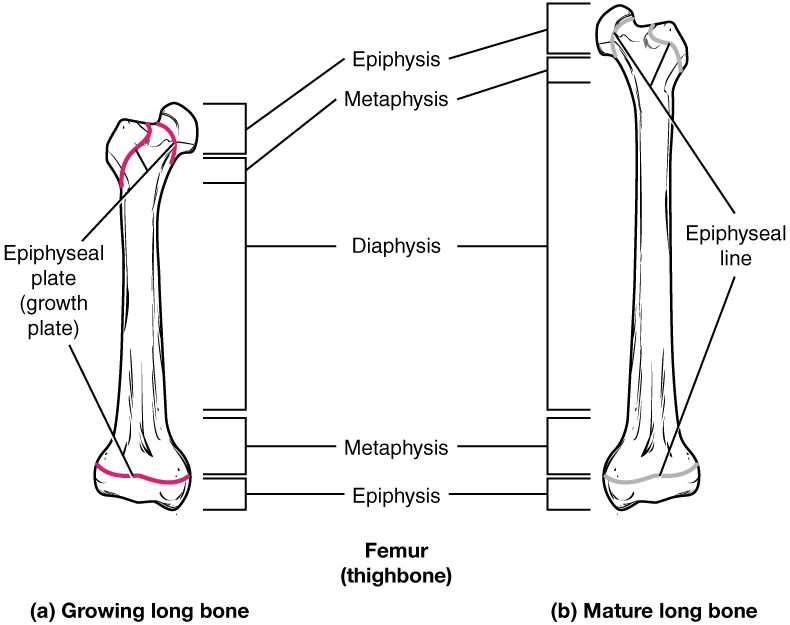

Your skeleton started as soft tissue. In the embryo, the future bones are sheets of loose embryonic tissue or small models made of cartilage, and bone replaces them over months and years. This page explains bone formation and growth: the two ways bone first forms, the steps of endochondral ossification (the way most of your bones formed), how the epiphyseal plate makes a long bone longer, how bones grow wider, and why growth in height stops at the end of the teens.
A growth plate injury
Leo, 11, lands badly off a trampoline and breaks his leg just above the knee. The X-ray shows the break running through a dark band of cartilage near the end of his thigh bone. His surgeon lines the pieces up with great care and warns his parents that, even when the bone heals, that leg may end up growing more slowly than the other. The dark band is the epiphyseal plate, the place where his bone is still getting longer. Adult bones have no such weak spot, and they no longer grow in length. To see why, start with how bone forms in the first place.
Ossification
Ossification (oss- = bone, -fication = making), also called osteogenesis (-genesis = origin), is the formation of bone tissue by osteoblasts. In the embryo, it begins about six to eight weeks into development. At that point the skeleton exists only as mesenchyme, the embryonic connective tissue you met with the connective tissues, and as small pieces of hyaline cartilage shaped like the bones to come.
Bone never forms out of nothing. Osteoblasts always lay it down on something already there. The two routes of ossification differ in what that something is:
- In intramembranous ossification, bone forms directly within a sheet of mesenchyme.
- In endochondral ossification, bone replaces a model made of hyaline cartilage.
Either way, the first spot where bone appears is called an ossification center. The finished bone tissue is the same compact and spongy bone you met in the last topic.
Intramembranous ossification
Intramembranous ossification (intra- = within; the "membrane" is the sheet of mesenchyme) forms the flat bones of the skull roof, most bones of the face, and the collarbones. It follows four steps (Figure 1):
![Four panels showing bone forming directly in embryonic tissue. (a) Bone-forming cells cluster in a round center surrounded by loose embryonic cells and fibers, with specks of new matrix. (b) The center fills with new bone matrix holding cells with branching arms, and a ring of bone-forming cells lines its edge. (c) A band of bone struts with red blood vessels running through the spaces, bordered above and below by rows of bone-forming cells and a covering layer. (d) The same band with solid layers of bone formed under each covering, and lattice-like bone in between with red marrow in its spaces.](../figures/os-6-16.jpg)
- An ossification center appears. Mesenchymal cells in the sheet cluster together and differentiate, first into osteogenic cells and then into osteoblasts.
- Osteoid is laid down and mineralized. The osteoblasts secrete osteoid, which mineralizes within days. Osteoblasts that become enclosed turn into osteocytes.
- Trabeculae and periosteum form. Osteoid is laid down around the blood vessels in the sheet, so the new bone forms as a network of trabeculae: spongy bone. The mesenchyme on the outer surface condenses into the periosteum.
- Compact bone forms at the surfaces. Osteoblasts under the periosteum lay down plates of compact bone over the spongy bone. The spongy layer between the plates becomes the diploë, and blood-forming stem cells carried in by its blood vessels settle in its spaces, forming red marrow.
At birth, the skull bones are not finished. Gaps between them are still filled with membrane, which lets the skull change shape during birth and lets the brain grow. They fill in over the first two years; you will meet them with the skull.
Endochondral ossification
Every other bone, which is most of the skeleton, forms by endochondral ossification (endo- = within, chondr- = cartilage). The key idea: cartilage does not turn into bone. It is broken down and replaced by bone, laid down by osteoblasts that arrive with invading blood vessels. Figure 2 follows a long bone through the steps:
![Six stages of a long bone forming from cartilage. (a) A small pale blue cartilage model in its covering. (b) The model grows and dark specks of calcified matrix appear in the middle of the shaft. (c) A red artery enters the middle, where red lattice bone has formed, and a covering now wraps the shaft. (d) The upper end of the bone: the shaft has a hollow central cavity with an artery and vein, and a band of calcified cartilage lies below the still-blue end. (e) An artery and vein enter the end itself and a second center of bone forms there. (f) The end is filled with lattice bone; cartilage remains only as a cap on the joint surface and as a thin plate between the end and the shaft.](../figures/os-6-17.jpg)
- A cartilage model forms. Mesenchymal cells differentiate into chondrocytes, which build a small model of the future bone in hyaline cartilage, wrapped in perichondrium.
- The middle of the model calcifies. As the model grows, chondrocytes in the middle of the shaft enlarge and the matrix around them calcifies. Cartilage has no blood vessels; its cells live on nutrients that diffuse through the matrix. Calcified matrix blocks that diffusion, so many of these chondrocytes die, leaving cavities.
- A bone collar forms. At the same time, the perichondrium around the middle of the shaft becomes vascular. Its cells become osteoblasts, and it is now periosteum. Those osteoblasts lay a ring of compact bone around the shaft, the bone collar, which supports the weakening middle.
- The primary ossification center forms. A nutrient artery grows in through the collar, bringing osteogenic cells and the precursors of osteoclasts. Osteoblasts lay spongy bone on the remnants of calcified cartilage. This is the primary ossification center, in the diaphysis. Most long bones have one by the end of the third month of development. Osteoclasts then break down the spongy bone in the middle, opening the medullary cavity.
- The model keeps growing at its ends. Cartilage at both ends keeps growing, and ossification spreads from the center toward each end.
- Secondary ossification centers form. Around birth and through childhood, blood vessels invade the epiphyses and the same sequence begins there. These are the secondary ossification centers. The epiphyses fill with spongy bone, which keeps its red marrow.
- Two cartilage layers remain. Cartilage is left in only two places: the articular cartilage on the joint surfaces, which lasts for life, and a disc between each epiphysis and the diaphysis, the epiphyseal plate, which lasts until growth ends.
| Intramembranous ossification | Endochondral ossification | |
|---|---|---|
| Starting tissue | A sheet of mesenchyme | A hyaline cartilage model |
| Is cartilage involved? | No | Yes: it is broken down and replaced |
| Bones formed | Flat bones of the skull roof, most bones of the face, collarbones | Nearly all the rest: limbs, vertebrae, ribs, hip bones, skull base |
| Ossification centers | One or more within the sheet | Primary in the diaphysis, secondary in the epiphyses |
| First bone made | Spongy bone around vessels, then compact plates | A compact bone collar, then spongy bone inside |
| Where the periosteum comes from | Mesenchyme condensing on the surface | The perichondrium, once vessels invade it |
| Growth in length afterward | No epiphyseal plates | At the epiphyseal plates, until they close |
The epiphyseal plate
The epiphyseal plate (also called the growth plate) is the disc of hyaline cartilage between the diaphysis and each epiphysis of a growing long bone, in the metaphysis. It is how a long bone gets longer. Under the microscope it shows four zones, running from the epiphysis side toward the diaphysis (Figure 3):
![A tall column magnified from the upper end of a thigh bone, showing the layers of the growth cartilage from top to bottom. At top, a few scattered cells in blue cartilage, with blood vessels. Below, flattened cells piled in columns like coins. Below that, rows of much larger, swollen cells. Below that, cells breaking down inside hardened matrix. At the bottom, in the flared zone of the shaft, red blood vessels run up among new struts of bone. Labels on the left name each layer and labels on the right describe what its cells are doing.](../figures/os-6-18.jpg)
- Reserve zone (also called the resting zone): small, scattered chondrocytes that rarely divide. They anchor the plate to the epiphysis, whose blood vessels feed the whole plate.
- Proliferative zone (prolifer- = to bear offspring): chondrocytes divide rapidly and line up in stacks, like piles of coins. Each division adds cells and matrix and pushes the epiphysis farther from the diaphysis. This zone supplies the new cells that make length possible.
- Zone of maturation and hypertrophy (hyper- = over, -trophy = nourishment, growth): the older chondrocytes, pushed down the stack, stop dividing and swell to several times their size. Their enlargement adds much of the length, often more than the divisions themselves.
- Zone of calcified matrix: the matrix around the enlarged cells calcifies. Cut off from diffusion, many of the chondrocytes die, leaving columns of calcified cartilage with empty spaces between them.
Below the plate, on the diaphysis side, is where bone takes over. Capillaries and osteogenic cells from the diaphysis grow up into the empty spaces. Osteoblasts lay bone on the calcified cartilage columns, and osteoclasts later clear the old cartilage and bone away. This region is sometimes called the zone of ossification.
Now watch the whole plate over time. New cartilage is added on the epiphysis side, and cartilage is replaced by bone on the diaphysis side at the same rate. So the plate stays about the same thickness while the diaphysis grows longer behind it. It is like a treadmill: the plate moves away from the middle of the bone, and bone fills in where it was.
Closing the plates
In the late teens, chondrocytes in the plate slow and then stop dividing. Bone replaces the last of the cartilage, and the diaphysis and epiphysis fuse. All that remains is a thin line of dense bone, the epiphyseal line (Figure 4). Once the plates have closed, the bone cannot grow any longer. Closure happens at different ages in different bones, mostly between about 15 and 21, earlier in girls than in boys. Doctors can estimate a child's remaining growth from an X-ray of the hand by seeing how many plates are still open.

Hormones control the pace. Two are named here in advance:
That is why an early puberty can make a child tall for their age but shorter than expected as an adult: the growth spurt comes early, and so does the closing of the plates.
Growth in length and width
A long bone has to grow in two directions, and it uses two different methods (bone growth in length and width):
- Interstitial growth (inter- = between; growth from within) is growth by cells dividing and adding matrix inside the tissue, expanding it from within. Cartilage can do this because its matrix is soft enough to stretch around new cells. Bone cannot: its mineralized matrix is rigid. So a long bone gets longer by interstitial growth of cartilage at the epiphyseal plate, which bone then replaces.
- Appositional growth (ad- = to, posit- = placed; growth by adding to a surface) is growth by laying new layers onto an existing surface. Bone grows wider this way. Osteoblasts in the cellular layer of the periosteum add new bone to the outer surface of the shaft. At the same time, osteoclasts on the endosteum remove bone from the inner surface.
That pairing matters. If bone were only added outside, the shaft would get thicker and heavier with every year. Because osteoclasts remove bone from the inside while osteoblasts add it outside, the medullary cavity widens as the shaft widens, and the wall stays in proportion. Appositional growth continues, slowly, after the plates close, which is why bones can still thicken in adults.
| Interstitial growth | Appositional growth | |
|---|---|---|
| How it works | Cells divide and add matrix inside the tissue | Cells add new layers to a surface |
| Tissue that can do it | Cartilage only | Bone and cartilage |
| In a long bone, makes it | Longer, at the epiphyseal plate | Wider, at the periosteum |
| Cells doing the work | Chondrocytes of the plate | Osteoblasts under the periosteum, with osteoclasts removing bone inside |
| When it stops | When the plates close, in the late teens | Continues slowly through life |
Back to Leo
Leo's break runs through his epiphyseal plate. If the injury kills cells of the reserve or proliferative zones, or if bone forms a bridge across the plate as it heals, that part of the plate stops making new cartilage. The rest of the plate keeps growing, so the leg can end up shorter, or angled if only one side of the plate is damaged. That is why growth plate fractures in children are lined up so carefully and followed with X-rays for a year or more. An adult with the same fall would have broken the bone, but there would be no plate left to injure.